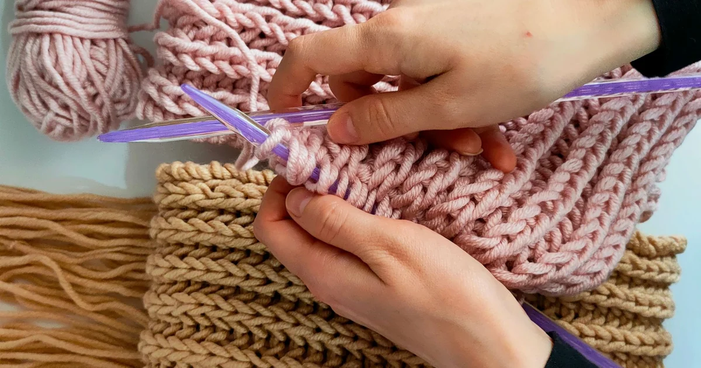
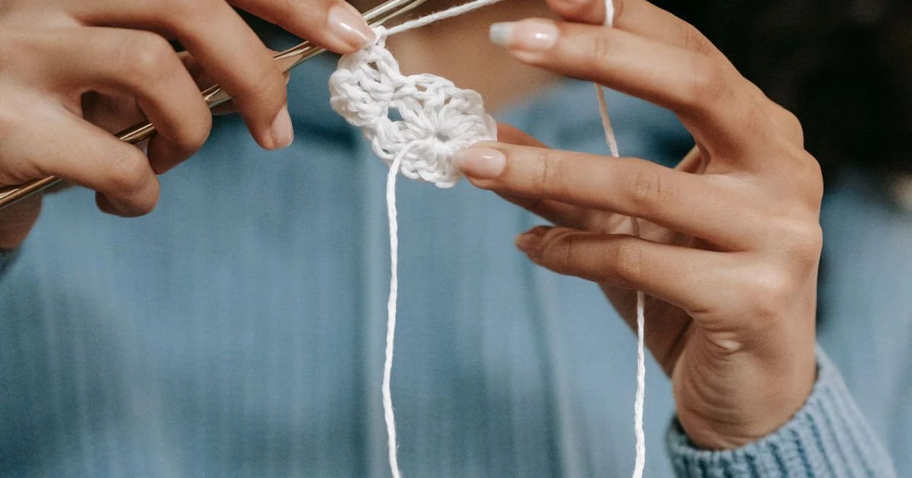
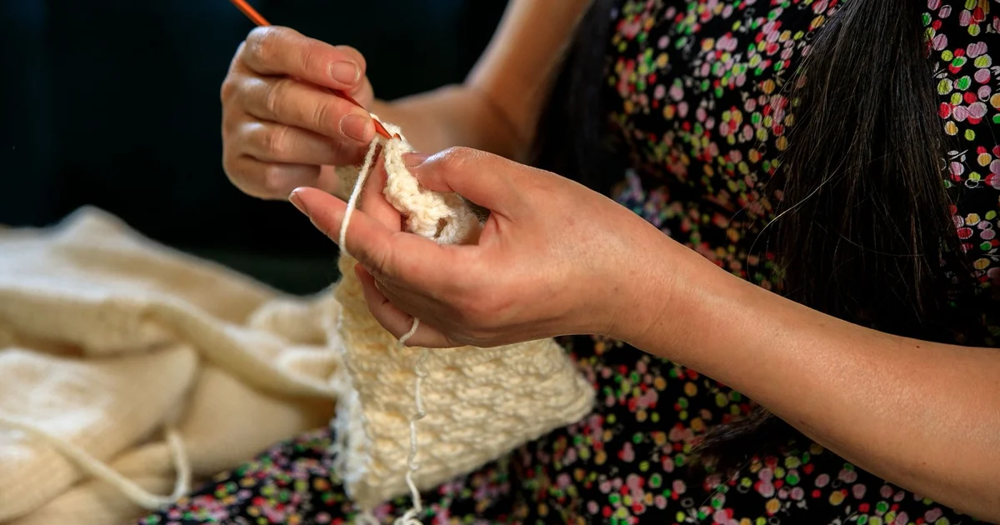
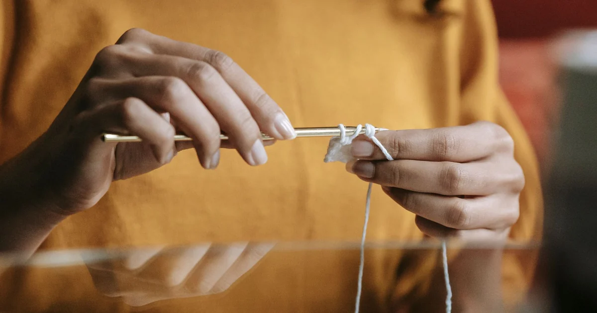
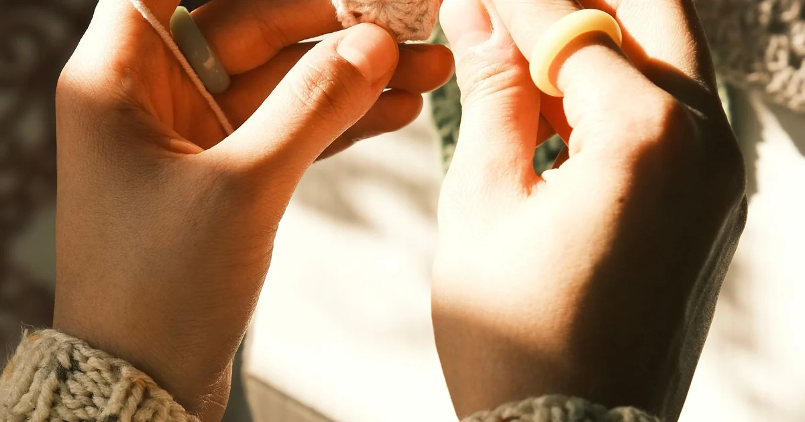
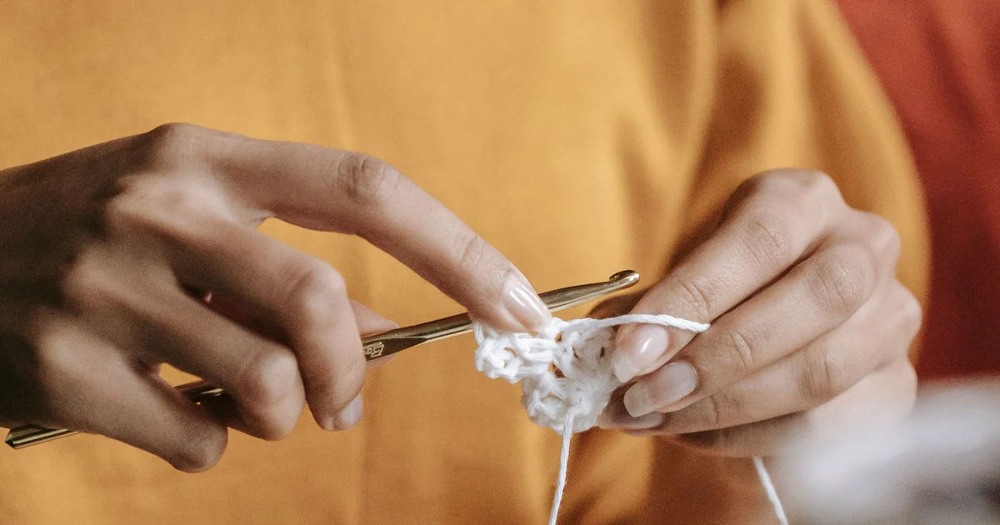
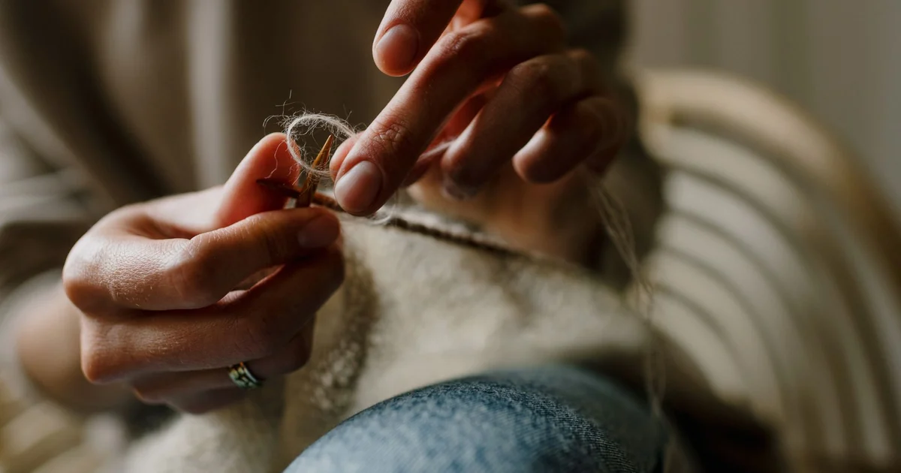
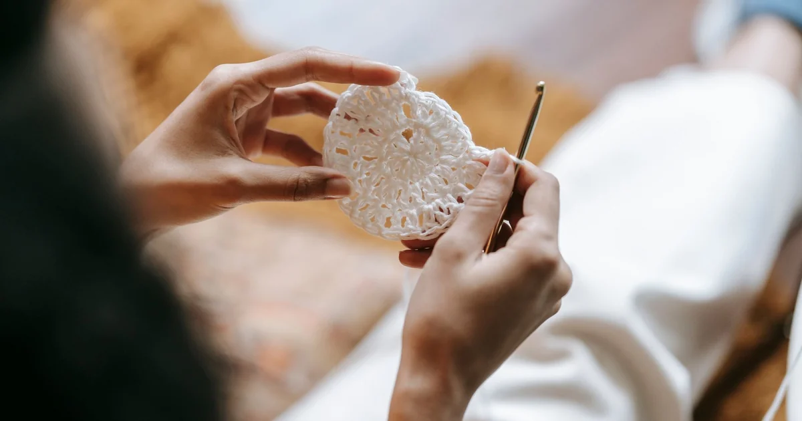

Beginner ProjectsEasy Crochet Scarf Pattern for Beginners
A simple scarf is a long rectangle: choose a width, work even rows in one stitch, and stop when it reaches the length you want.
Browse category
Explore clear, beginner-friendly crochet tutorials in beginner projects. Start with the basics, practice at your own pace, and follow the linked guides whenever you need another explanation.

Beginner ProjectsA simple scarf is a long rectangle: choose a width, work even rows in one stitch, and stop when it reaches the length you want.

Beginner ProjectsA basic dishcloth is a small rectangle worked in washable yarn; use the pattern’s fiber and care instructions for its intended use.

Beginner ProjectsA classic granny square is built from groups of three double crochets, with chain spaces forming the corners.

Beginner ProjectsA basic washcloth is a flat, absorbent rectangle; match the fiber and washing method to how you plan to use it.

Beginner ProjectsA simple crochet headband can be a rectangle joined at the ends or a band worked in the round; use the pattern’s construction.

Beginner ProjectsA simple coaster can be a small square or circle; cotton and a stable stitch help it hold its shape.

Beginner ProjectsA simple blanket is a large rectangle, so a small gauge swatch helps estimate width, row count, and yarn before you begin.

Beginner ProjectsA good first crochet project uses a small number of stitches, clear instructions, and materials you can comfortably handle.